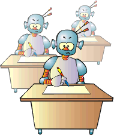

To make the exam finite we will make finite the number of the worlds. This will be not enough because even for one world the exam would be infinite. That is why we will add requirements for efficiency. We will give for each world a limit of time (tacts) the device has for training and we will also say what results it has to achieve after this training (for example, in the next hundred tacts the relation victory to loss to be at least 9 to 1). We will also restrict the time and memory available to the device for a step. These requirements should not be too tough because our AI will not satisfy them and will fail the exam. We will also suppose that there will be no fatal mistakes in the worlds chosen for the exam. If there were, our AI could make a fatal mistake during his training and fail the exam. Of course, if AI lives many times in such a world it will get a good average score but we want to let it live only once per world.
The real world does not satisfy this requirement simply because one could be Einstein but to be eaten up by a bear before realising the Theory of Relativity, i.e. to make a fatal mistake before being trained. An example for a world without fatal mistakes will be if our device plays chess against someone else. After each game the next one begins. In this world AI can lose many games but this will not have any influence on the next.
After making the exam final our algorithm can start generating the programs one by one, to test each and to take out only those that have passed the exam. We will consider that our algorithm orders the programs according to their complexity (i.e. according to their length). That is to say, it will take out first the simplest (shortest) program from those that have passed the exam. Will this program be AI or AI will be generated later on? We have to point out that not all programs that will pass the exam will be AI. For example, if we write a program especially for the
worlds on which we test it will pass the exam but it will notbe AI. We have the same problem with the students' exams. Many people who have learned all the tasks by heart will pass the exam but this people are not intellects but crammers.
We will consider that the worlds included in the exam are enough numerous and varied (a bigger number of tasks does not make the exam harder for the examiner because most of the examinees will fail at the beginning).In this situation almost all programs that are not AI will be sifted out. As a result, the first (the simplest) which will be worked out will be AI and the other written only for the exam worlds will be more complex and will be worked out later on.
So, we already have an algorithm for discovering of AI! Does it mean that every decent programmer can write a program on it, to start it, to wait for a while and it will work out the desired AI? Yes, but the time needed would be quite a lot (let's say a hundred - thousand years). The reason is in the phenomenon called combinatory explosion. It is not of great difficulty to be written a program expected to stop after the end of the universe (for example, you can increment a ten bit counter until it overloads).
The written above means that the algorithm described is entirely useless but it is not so with the definition of AI. After learning what is AI we can try to build it directly and use the algorithm to make sure that this really is AI.
After the successful testing of our device in all test worlds we can put it in our (real) world. Of course, it will not be ready immediately for the Turing's test, because at the best case only a "bill and coo" will be heard behind the curtain. Our device will need first tutors and governess to teach it of good manners. The teachers should encourage it by giving one to its line victory and punish it by the line loss. Thus, our AI will work hard trying to get a maximum encouragement and a minimum punishment. Probably then the computers will not be programmed but educated and trained. And maybe one day, after having educated and trained them we will become useless.